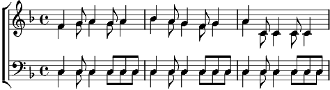

1. Dans la jungle, terrible jungle
Le lion est mort ce soir
Et les hommes tranquille s'endorment
Le lion est mort ce soir
Refrain: Wim o weh...
2. Tout est sage dans le village
Le lion est mort ce soir
Plus de rage, plus de carnage
Le lion est mort ce soir
Refrain
3. L'indomptable, le redoutable
Le lion est mort ce soir
Viens ma belle, viens ma gazelle
Le lion est mort ce soir
Refrain